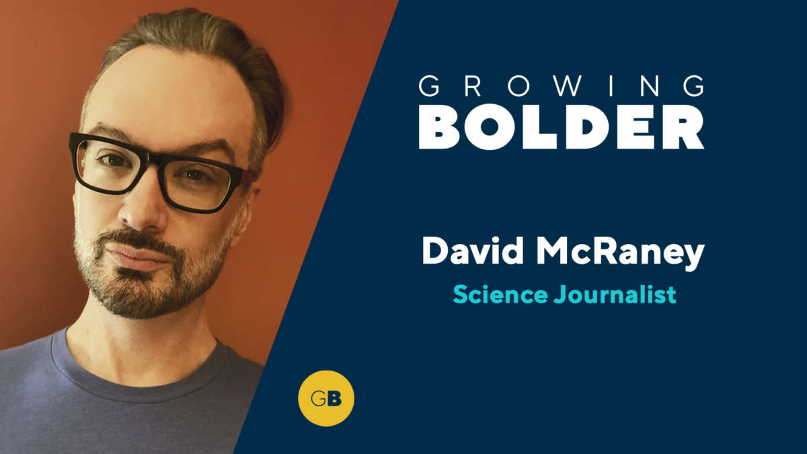

Clearer Thinking with Spencer Greenberg · Episode 3
Deep Canvassing, Street Epistemology, and Other Tools of Persuasion with David McRaney
Spencer Greenberg talks with David McRaney about how minds actually change: why facts bounce off, what the elaboration likelihood model teaches, how 17,000 doorstep conversations converged on one technique, and when persuasion is ethical.
Illustration. AI-generated watercolor made for this page: shoulder to shoulder, the posture of every technique in this episode.

Video. The full episode on YouTube.
~00:02
What Persuasion Is Not
Source fact David opens by clearing the field. Persuasion excludes coercion: nothing that takes away the other person agency. It excludes defeating an opponent with a superior argument, and it excludes debate with a winner and a loser. The real thing guides another person along in stages toward better understanding of their own thinking, and shows how that thinking could align with the message.
Persuasion is not coercion.
David McRaney · Episode ~00:04
Source fact The punchline of his research: all persuasion is self-persuasion. People change or refuse based on their own desires and their own internal counter-arguing, roughly in proportion to their certainty. The best techniques do not push. They get metacognitive: examine the certainty, examine what feeds it, and people often find they are more open than they thought.
Source fact David sorts persuasion into kinds, because the target changes the method. Affecting behavior, like getting someone to buy a razor, is one silo. Correcting a false belief is another. Moral or attitudinal persuasion, which runs on identity and emotion, is a third. People tangle their Venn diagrams by treating beliefs, opinions, attitudes, and values as one thing. They are not.
Nugget 1 · Definition
Nobody gets persuaded against their will
What happened. David defines persuasion by exclusion: not coercion, not debate victory, not fact-dumping. The real thing is guided self-examination of certainty.
Why it matters. Most persuasion attempts fail because they aim at the wrong target with the wrong weapon: facts at an attitude, debate at a person.
The principle. Name the target first: behavior, belief, or attitude. Then pick the method that fits the target.
~00:08
Beliefs Are Not Attitudes
Source fact Saying the president is a bad president feels like stating a belief. David says it is really an attitude: a response that comes online whenever you contemplate the object. Beliefs feed it, some true and some false, but attacking the beliefs misses the engine. To move the attitude, you have to ask what generates it, what certainties live inside it, what confidence fuels it.
Nugget 2 · Targeting
Aim at the attitude, not the belief
What happened. The president example shows the misfire: fact-checking an attitude is like repairing the paint when the engine smokes.
Why it matters. Attitudes run on identity and feeling. Belief-level rebuttals slide off because they never touch the fuel.
The principle. Before you argue, ask whether you face a belief, an attitude, or a value. Argue with the thing you actually face.
~00:12
The Elaboration Likelihood Model
Source fact For behavior change, David reaches for the elaboration likelihood model, built by Richard Petty and John Cacioppo. The backstory delights: as graduate students drowning in contradictory persuasion studies, they painted a rented room with blackboard paint, wrote every finding on the walls, and stared until the pattern emerged.
Source fact The model has two routes. When elaboration likelihood is high, people take the central route: they weigh the argument merits, its logic, its accuracy. When it is low, they take the peripheral route: speaker attractiveness, big words, prestigious degrees, even the promise of pizza after the lecture. Same soap commercial, two minds: one hears flowers and wants them, the other hears flowers and fears mockery at work.
Source fact The signature experiment: students were told a comprehensive final exam would decide their degrees, either at their own university or at another one. Then they heard strong arguments (prestigious universities require such exams) or weak ones (it harkens back to the Greeks). High-elaboration students, the ones facing the exam themselves, dissected the weak arguments and rejected them. Strikingly, nine weak arguments persuaded them less than three weak arguments did: more flaws to notice. Low-elaboration students used a different heuristic entirely: more arguments equals better, regardless of quality.
The exam study: what persuades whom
Same arguments, opposite effects, depending on elaboration. Bar heights illustrative of the stated pattern.
Source: Clearer Thinking, David McRaney episode, ~00:16. The 9-vs-3 weak argument reversal and the more-is-better heuristic are stated findings. Magnitudes are illustrative.
Nugget 3 · Model
Match the route to the mind
What happened. Petty and Cacioppo found that motivated minds audit arguments while unmotivated minds count them. Nine bad reasons lose to three bad reasons, but only for the engaged.
Why it matters. Piling on arguments backfires exactly when the audience pays attention. Know which route your listener is on before you choose your ammunition.
The principle. For the engaged, bring few strong arguments. For the distracted, the peripheral cues do the work.
~00:20
What Raises the Likelihood
Source fact Elaboration likelihood comes down to motivation plus ability. Motivation rises when you must teach the material to someone, when you already know the topic, or when social costs loom: shame or ostracism for a poor position. Ability is cognitive bandwidth, and it falls with load, noise, hunger, anger, or even yellow text on a white background.
Nugget 4 · Conditions
Teach it to learn it
What happened. Being told you will teach something spikes elaboration more than almost anything. Hunger, noise, and anger crush it.
Why it matters. Persuasion is situational. The same person on the same issue elaborates or coasts depending on the room, the stomach, and the stakes.
The principle. To persuade, first raise the likelihood: give them a reason to care and a clear head to care with.
~00:23
Assimilation and Accommodation
Source fact Minds change through two engines. A child learns dog, then points at a horse and says dog, or big dog. Corrected, the child must accommodate: build a higher category, animal, that holds both. Assimilation fits the novelty into the old model. Accommodation rebuilds the model around the novelty.
Source fact Novelty triggers a dopamine response that grabs attention and pushes you to resolve the mismatch. But adult models are complex, so assimilation is cheaper, and the brain walks a tightrope: small amounts of incongruity alert us, and we err on the side of our priors. Updating wrongly is dangerous, and so is a failure to update. Something has to make standing pat feel riskier than changing.
Nugget 5 · Change
Assimilation is cheap. Accommodation is the change.
What happened. Every surprise gets sorted: force it into the old categories, or rebuild the categories. Adults default to force.
Why it matters. Most failed persuasion is failed accommodation: the listener assimilated your point into their old model and kept the model.
The principle. Make not-updating feel riskier than updating. That is the only toll that opens the accommodation road.
~00:31
The Magnetic Concept
Source fact Spencer names a teaching headache: the magnetic concept. You explain something new, and the listener already owns a nearby category that is not quite right. Everything you say sticks to their magnet. David agrees completely: priors filter every novelty through a thousand lenses of past experience, some emotional, some just the blueprint in the mind that already makes sense.
Source fact He adds two honest footnotes on quotation. The line about trouble coming not from what you do not know but from what you know for sure that just is not so is often attributed to Mark Twain, who never said it. A Jungian line about the mind oscillating between sense and nonsense, not right and wrong, is also misattributed. The episode flags both on air.
Nugget 6 · Teaching
Near-miss categories eat new ideas
What happened. A close-but-wrong prior acts like a magnet: every explanation gets pulled into the old shape.
Why it matters. The hardest ideas to teach are not the alien ones but the adjacent ones. The listener thinks they already understand.
The principle. Name the nearby wrong category explicitly, then show the seam where it fails.
~00:34
Motivated Reasoning
Source fact David favorite exhibit: ask someone newly in love why, and you hear about the walk, the talk, the music, the way they cut their food. Ask the same person during the breakup, and those exact traits become the reasons to leave. The reasons did not change. The motivation to search for reasons changed.
Source fact In psychology, reasoning simply means coming up with reasons for what you think, feel, and believe. We deploy it defensively, for reputation management among trusted peers, and we cherry-pick accordingly. The person googling for proof that vaccines cause autism runs the same machinery as the dinner-table debater. Dumping facts on either of them just feeds the cherry-picker.
Source fact Spencer connects this to Julia Galef scout and soldier mindsets, the subject of episode 6 of this track. Late for a wedding, you are a scout: accuracy matters, so you truly listen about routes. At the wedding, debating a hated politician, you are a soldier: the feeling came first, and the reasons are reinforcements.
Nugget 7 · Reasoning
Reasons follow feelings
What happened. The love-to-breakup flip shows reasoning as a lawyer, not a judge: it argues for the client feeling, whichever way the feeling points.
Why it matters. Fact-dumping fails because it argues with the lawyer while the client sits untouched. The machinery just finds better briefs.
The principle. Do not debate the reasons. Ask what the reasons are for.
~00:42
Goals, Not Truth
Source fact Every bout of reasoning has a goal. Rushing to the wedding, the goal is accuracy. Debating politics, the believed goal is accuracy but the real goal is usually group membership: am I showing I am a good member of my group. Jonathan Haidt moral dumbfounding studies make the gap visible. People instantly condemn the man who misuses a dead chicken, then flail when asked why, generating and abandoning reasons until only I do not know why, it is just wrong remains.
Source fact David relays a line from the sociologist Brooke Harrington: if social science had an E equals MC squared, it would be that the fear of social death is greater than the fear of physical death.
The fear of social death is greater than the fear of physical death.
Brooke Harrington, via David McRaney · Episode ~00:46
Source fact Flat earthers are his neutral example. Whatever curiosity brought someone in, the community becomes the point: the number one motivation becomes looking like a good member of the group. The antecedents of our thoughts and drives are mostly unavailable to us, which is why the working techniques all aim at helping people uncover the hidden motivation behind the stated position.
Nugget 8 · Motivation
Find the goal behind the argument
What happened. Haidt subjects and flat earthers alike show reasoning serving undeclared goals: group standing, identity, the avoidance of social death.
Why it matters. You cannot win an accuracy debate with someone playing a membership game. Different game, different moves.
The principle. Ask what winning looks like for them. Persuade the goal, not the argument.
~00:50
The Interpreter and the Confabulator
Source fact Split-brain research gives the machinery a name. After the corpus callosum was severed to treat epilepsy, the speaking left hemisphere, the left-brain interpreter, would explain actions it never saw. Shown a car wreck to the silent half, the body gasps, and the interpreter blames lunch. Handed a note saying stand up and walk, it invents a reason about a pencil across the room. Confabulation: no access to the antecedents, fluent production of justifications anyway.
Source fact David ties this to Hugo Mercier and Dan Sperber interactionist model: one system receives information, another delivers arguments, and the arguer may never meet the motive. Spencer adds the introspection caveat: private root-seeking can work, but introspection performed for an audience mostly manufactures confabulations tuned to reputation.
Nugget 9 · Mind
The narrator is not the author
What happened. Split-brain patients and dumbfounded moralists both show the same gap: fluent reasons, absent access to the real causes.
Why it matters. If even the speaker does not know why they believe it, your counter-reasons answer a press release.
The principle. Treat stated reasons as hypotheses about motives, not as the motives.
~00:55
The Affective Tipping Point
Source fact David favorite finding comes from David Redlawsk: the affective tipping point. How much counter-evidence does a motivated reasoner need before the defense collapses? In a fake presidential primary, subjects picked a candidate, then received escalating shares of counter-evidence. Up to about 3 out of 10 counter items, people liked their candidate more than controls did: the backfire zone, where defense deepens the attachment. Past about 30 percent, resistance exhausted itself and active learning began. Doubt, Redlawsk says, starts around 15 percent.
The affective tipping point
Share of incoming information that contradicts your candidate. Stated figures from Redlawsk study as described on air.
Source: Clearer Thinking, David McRaney episode, ~00:57. The 15 and 30 percent marks are Redlawsk figures as reported on air. The curve shape is illustrative. Real-world numbers run higher for identity-loaded topics, per Redlawsk caveat.
Source fact Redlawsk own caveat: the lab is not the world. People control their information diet, avoiding disconfirming sources, so many never reach their tipping point. And the tipping point cuts both ways: whoever controls the media diet and the reality tests can hijack it, which is why propaganda and gaslighting work. Spencer tests the intuition with escalating absurdities: frogs marching in the kitchen get assimilated as a trick, but oceans turning to wine would eventually break anyone.
Nugget 10 · Evidence
Below 30 percent, evidence backfires
What happened. Redlawsk subjects met counter-evidence with deeper love for their candidate until the share hit about 30 percent. Then the defense broke.
Why it matters. Dribbling facts at a motivated mind strengthens it. Only overwhelming, inescapable counter-evidence flips the mode.
The principle. Do not spend your facts below the tipping point. Change the diet or wait for the flood.
~01:03
The Convergent Techniques
Source fact David went looking for what actually works and found separate groups, street epistemology, deep canvassing, smart politics, and the therapy world motivational interviewing, that had never met yet converged on the same steps in the same order, each through thousands of A/B tested conversations. Brains work a certain way, and independent trial and error found it repeatedly.
Source fact Deep canvassing is the showpiece. Activists in California knocked on doors in hostile territory on same-sex marriage and transgender bathroom laws, asked residents for their 1-to-10 feeling, and ran 17,000 conversations, keeping what worked. Street epistemology, which David studied in Texas, fits fact-based topics like flat earth. Deep canvassing fits political and moral attitudes.
Source fact Step one is always rapport. Humans scan instantly for enemy or ally, for threats to agency, for shame risk. So you ask consent to explore, you make clear you are not there to win, and you turn face-to-face into shoulder-to-shoulder: two people marveling at a disagreement. Then, for facts: get the claim, repeat it back, confirm the summary, pin down their definitions, and ask for confidence on 1 to 10 or 0 to 100 percent. The rest of the conversation lives in that number: what are your reasons for this confidence, and what methods told you those reasons are good?
Source fact For attitudes, the rhythm is similar: the 1-to-10, a story or ad from either side, then the power question, do you still have the same number, and why does that number feel right. Asking why the respondent is not one notch stronger or weaker makes people generate arguments on both sides themselves, and the self-made dissonance does the moving. David stresses technique rebuttals over topic rebuttals. In a real conversation, help them inspect their confidence machinery. Save fact-vs-fact for good-faith expert settings.
Try it: the confidence explorer
The street epistemology move, compressed. Pick a belief and a confidence.
~01:14
The Flat-Earth Role Play
Source fact Spencer volunteers as a flat earther, 90 percent confident, ice wall included, and David runs the technique live. Consent first, then the claim in Spencer own words, repeated back and confirmed. Then the number: 90 percent. Then the dissonance probes: what evidence would move confidence to 100 percent, and what if the voyage to the ice wall found nothing?
Source fact David reads the green lights: Spencer said trust, and named evidence as the standard. For most flat earthers, he says, the facts are not the point. The point is distrust: of the military-industrial complex, of NASA, of the scientific community folded into it, plus a hunger for autonomy and for sources with your interests at heart. The conversation to have is not about the shape of the earth but about how to vet experts when you cannot be one yourself.
Source fact He also sets expectations: 180-degree flips are not the goal. Any movement counts, and it usually takes many conversations. A 100 percent or 0 percent confidence is a red flag for pre-contemplation, the state before active learning even starts, and there is separate literature on how to move someone into contemplation. David signature dissonance probe in the role play asks what evidence would move the number to 100 percent.
~01:20
Step Zero: Ethics
Source fact Before any technique comes step zero: why do you want to change this person mind? Be honest. Wanting to be right, wanting your side to win, these are unethical fuel. Persuasion is ethical, David says, when the other person keeps full agency throughout, when both sides admit the mystery, and when you stay willing to change your own mind. For facts, the shared goal is accuracy. For values, the aim is less harm, which requires agreeing on what good looks like.
Source fact Spencer names the symmetry problem: everyone feels they are on the good side, so I am right cannot license persuasion, or it licenses everyone. David agrees, and adds the evolutionary frame: we are set up for 12-angry-men moments, limited perspectives pooling into something better, but also wired to want our side ahead. Roll all of that into step zero.
Nugget 11 · Ethics
Step zero before step one
What happened. Every technique in the episode opens with rapport, but David insists the real opening is private: audit your own motive.
Why it matters. Techniques are symmetrical. The same moves persuade toward truth or away from it. Only the motive differs.
The principle. Ask why you want the mind changed. If you cannot be changed by the conversation, do not start it.
The episode in eight lines
- Persuasion is not coercion. All of it is self-persuasion.
- Name the target: behavior, belief, or attitude. Then choose the weapon.
- Motivated minds audit arguments. Unmotivated minds count them.
- Assimilation is cheap. Real change is accommodation.
- Reasons are lawyers for feelings. Find the client.
- Below 30 percent counter-evidence, facts backfire. Above it, minds update.
- Rapport first, confidence number second, dissonance does the rest.
- Step zero: know why you want the mind changed, and stay changeable yourself.
Distilled from Clearer Thinking, Deep canvassing, street epistemology, and other tools of persuasion with David McRaney, 2021 podcast release, YouTube re-upload June 2023. Full episode: youtube.com/watch?v=JFVOLdwsKb0. Times marked ~ are proportional estimates from word position.
Nugget index
- Nobody gets persuaded against their will
- Aim at the attitude, not the belief
- Match the route to the mind
- Teach it to learn it
- Assimilation is cheap. Accommodation is the change.
- Near-miss categories eat new ideas
- Reasons follow feelings
- Find the goal behind the argument
- The narrator is not the author
- Below 30 percent, evidence backfires
- Step zero before step one